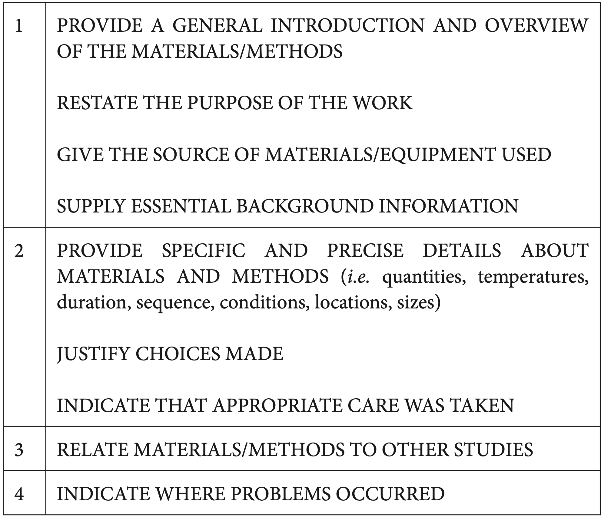

05:00
Act II: Literature review
On the shoulders of giants
2023-12-06
Learning objectives of today
Know the How to read and scientific article? (and trying not to die)
Know-how look for scientific databases
Make a visualization of scientific landscapes
How to do a Literature Review at ERPI?
Agenda for today
How to do a Literature Review at ERPI?
Understanding the Paper structure I
Understanding the Paper structure
Structuring your paper
Mental model for the research development?

The research process

How to do a Literature Review?
Literature review
Steps for a Literature Review
Literature review: The Context
Take the time to planning because it has the major impact at the end.
Literature review: Planning
Goal: Identification of material recycling approaches in the Additive Manufacturing contexts (commercial and open-source)
Literature review: Planning
Subjet + Verb + Complement → Topic + Context + Problem
Literature review: Planning
Literature review: Planning
Grid lecture
Literature review: Conducting
Literature review: Reporting
Structure of Literature
- Title
- Abstract
- Introduction
- Literature review
- Methodology
- Results
- Discussion
- Conclusion
- References
Example 1:
Literature review – Ethics
Report on your literature findings and beware of:
- Purposely misrepresenting the work of other authors.
Plagiarism – the use of another’s original words, arguments, or ideas as though they were your own, even if this is done in good faith, out of carelessness, or out of ignorance.
- Importance of the References (Act III we’ll take a look)
Questions
Understanding the Paper structure I
Agenda for today
How to do a Literature Review at ERPI?
Understanding the Paper structure I
Understanding the Paper structure
Structuring your paper
Reading an Article - Part I
What is a Research Paper?
Tip 1
Start by the Outline !!
What is a Research Paper?
Tip 2: Méthode AIC
- Title ✅
- üîé Abstract
- üîé Introduction
- Literature review
- Methodology
- Results
- Discussion
- üîéConclusion
- References
AIC Reading method
For screening read : Title, Journal, keywords and Abstract
For detailed synthesis use AIC:
Abstract → Summary of the paperüîé
Introduction → Context of problem and research, gap, summary of what is done
Conclusions → Summary of results and importance of results given the context.
The abstract
The minimal viable product of a research.
- What’s the topic?
- What’s the problem? (Is it important? )
- What’s the research question?
- What is the purpose ?
- How you resolved it?
- Implications for future ?
Exemple 1
Exemple 1
- What’s the topic?
- What’s the problem?
(Is it important? ) - What’s the research question?
- What is the purpose ?
- How you resolved it?
- Implications for future ?
Exemple 2
- What’s the topic?
- What’s the problem?
(Is it important? ) - What’s the research question?
- What is the purpose ?
- How you resolved it?
- Implications for future ?
Exemple 3
- What’s the topic?
- What’s the problem?
(Is it important? ) - What’s the research question?
- What is the purpose ?
- How you resolved it?
- Implications for future ?
Mental model when reading an abstract
Topic → the writer provides background factual information.
Problem → The writer presents the gap/problem to treat
Research Gap → the writer states the limits of current knowledge.
The purpose : the writer presents the general aim and the specific aim of the study.
Methodology → the writer summarises the methodology and provides details.
Results → the writer indicates the achievement of the study.
Perspectives → the writer presents the implications of the study.
Your turn !
- What’s the topic?
- What’s the problem?
- Is it important?
- What’s the research question?
- What is the
purpose ? - Implications
for future ?
Understanding the Paper structure
Agenda for today
How to do a Literature Review at ERPI?
Understanding the Paper structure I
Understanding the Paper structure
Structuring your paper
What is a Research Paper?
- Title ✅
- Abstract ✅
- Introduction
- Literature review
- Methodology
- Results
- Discussion
- Conclusions ✅
- References
Méthode AIC
Let’s talk about

ChatGPT on the Scientific arena
Nothing (In December 2022) ! üò¨
ChatGPT on the Scientific arena

Only 3! üò¨ (In december 2022)
ChatGPT on the Scientific arena
In december 2022
Example of AIC
Haque, M. U., Dharmadasa, I., Sworna, Z. T., Rajapakse, R. N., & Ahmad, H. (2022). .”I think this is the most disruptive technology”: Exploring Sentiments of ChatGPT Early Adopters using Twitter Data. arXiv preprint arXiv:2212.05856.
Before reading.. have an lecture grid in mind ❗

Abstract
What’s the topic?
What’s the problem?
Is it important?
What’s the
research question?
What is the
purpose ?
Implications
for future ?
Introduction
Context
Focus on
the Research object
Hypothesis
Presenting methods
Conclusions
Recall the Purpose
Summarise Results
Perspectives
Reading technique
[1min] [Screening] → Title, Journal, keywords
[5min] [Profiling] → Screening + Abstract
–
- [20min] Focusing → [Profiling] + Introduction + Conclusions
–
- [1hr] In deep → Focusing + All other sections
–
- [2-3 hr] For research → In deep + Reading Grid + References
Structuring your paper
Agenda for today
How to do a Literature Review at ERPI?
Understanding the Paper structure I
Understanding the Paper structure
Structuring your paper
The scientific history

The scientific history

Abstract
Example of Nature:

Introduction
- 1er Paragraphe: établir le contexte, introduire le sujet. Il doit établir l’importance du sujet de recherche
- 2ème : établir un lien avec la littérature existante
- 3ème : établir clairement le “Gap to be filled”
- 4émé Expliquer comment on a traité le sujet
- 5èmé :“Annoncer la couleur” des résultats
- Enfin : Décrire la structure de l’article
Methodology
Results

Discussion & Conclusions
The scientific history
Some web ressources for writing
Rédiger un article scientifique par David Lindsay, Pascal Poindron
Writing a scientific article: A step-by-step guide for beginners

TD: Landscape of Research